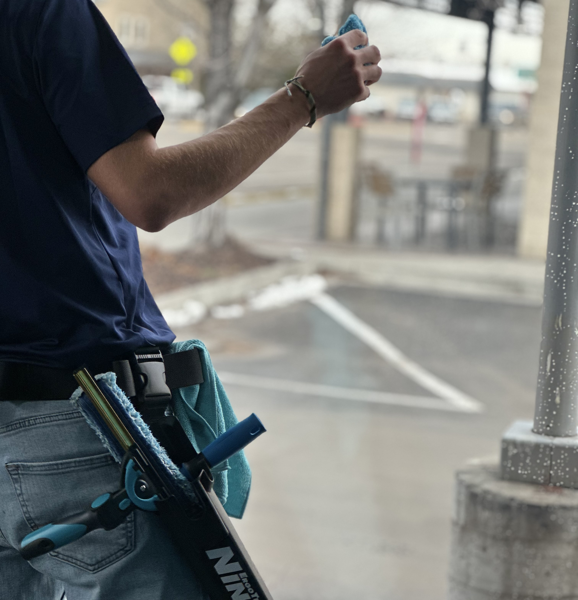

Our Pressure Washing Service
Blast Away Years of Grime in Minutes
Is your driveway looking dull? Are your walkways covered in slick, green moss? At The Window Biz, we provide high-powered pressure washing that restores your surfaces to their original glory. From oil-stained driveways to weathered siding, we remove the stubborn dirt, mold, and mildew that standard scrubbing can’t touch. It’s the fastest, most cost-effective way to give your property an instant facelift.

Our Work